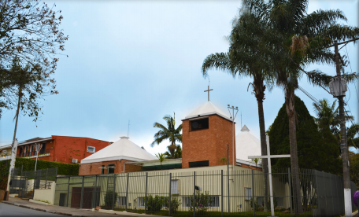
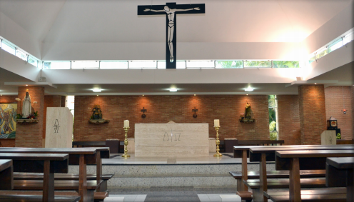
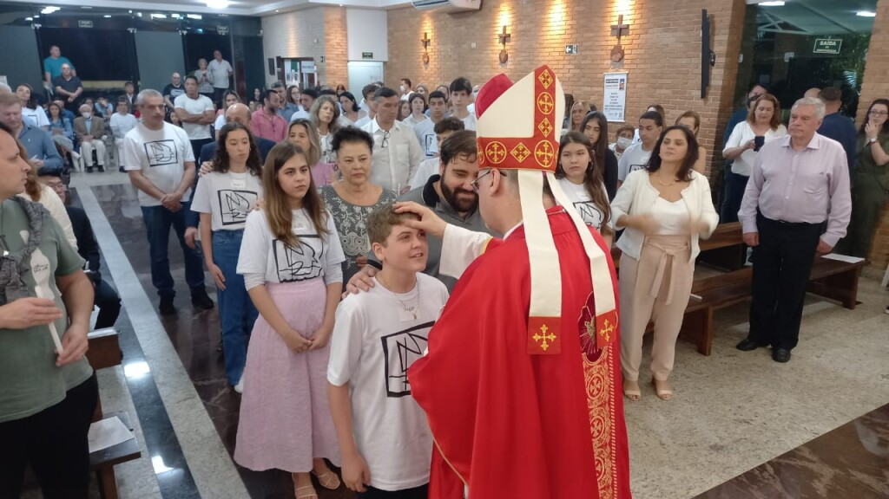
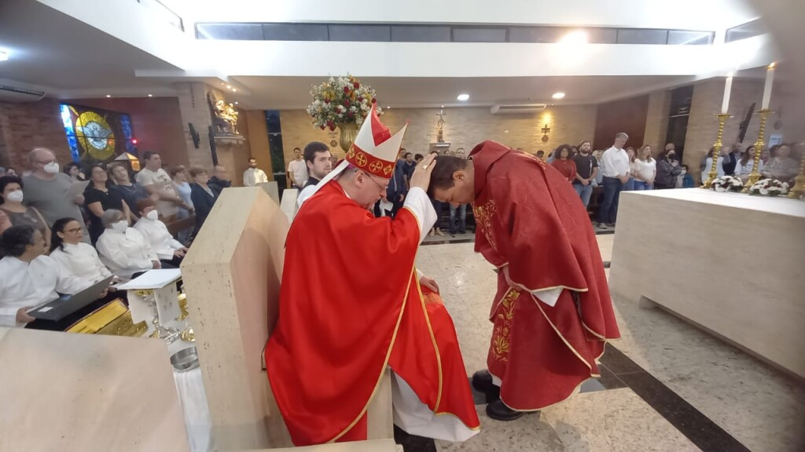
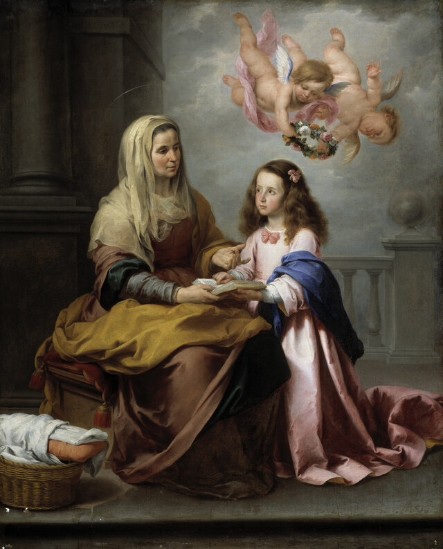

Missas
- Terça a sexta
- 8h
- Sábado
- 17h
- Domingo
- 8h, 10h, 11h30 e 18h
A Eucaristia é a fonte e o ápice da vida cristã (CIC 1324).
Venha celebrar a Missa, confessar-se ou rezar conosco.
Rua Regina Badra, 282 · Alto da Boa Vista

A Eucaristia é a fonte e o ápice da vida cristã (CIC 1324).
Quinta e sexta, das 8h30 às 10h30.
A ficha diocesana não informa se é preciso agendar. Consulte a secretaria.
Na Reconciliação, recebemos o perdão de Deus e nos reconciliamos com a Igreja (CIC 1422).
Horários habituais publicados pela Diocese de Santo Amaro (ficha sem data de atualização; consulta em ). Confirme alterações e horários especiais com a secretaria.
Sem eventos especiais confirmados nesta agenda. Para os avisos da paróquia, acompanhe o Instagram ou o Facebook.
A paróquia convidou a comunidade para o bazar na Rua Regina Badra e agradeceu pelas doações. Aviso paroquial de 5 de outubro.
A comunidade foi convidada a rezar a novena aos sábados e domingos. Convite da paróquia.
Pelo Batismo, nascemos para a vida em Cristo e passamos a fazer parte da Igreja (CIC 1213). Para batizar seu filho, pergunte à secretaria sobre a preparação de pais e padrinhos, os documentos e as datas.
A aliança matrimonial entre batizados foi elevada por Cristo à dignidade de sacramento (CIC 1601). Se vocês vão se casar na Igreja, a secretaria pode orientar sobre a preparação, as datas e os documentos.
A fachada de tijolos da Rua Regina Badra dá lugar a um presbitério de pedra clara, com um crucifixo suspenso sobre o altar.
É a data de fundação que consta na ficha da Diocese de Santo Amaro.
O antigo site paroquial já dava o nº 282 como endereço da igreja e divulgava os horários à comunidade.
A ficha da diocese registra a posse do Pe. Cláudio Nazário da Silva.
A diocese publica o registro fotográfico da celebração da Crisma em Sant’Ana.



Fotografias: ficha paroquial e arquivo da Crisma de 2022 da Diocese de Santo Amaro.

Segundo a tradição, Ana e Joaquim esperaram muitos anos por um filho. Ana levou a Deus o desejo de ser mãe. São Paulo também nos convida a perseverar na oração (Rm 12,12). Fonte: Vatican News.
Como imitá-la: Escolha uma intenção difícil e volte a rezar por ela todos os dias desta semana.
A tradição recorda Ana e Joaquim cuidando de Maria. Murillo pintou Ana ensinando a filha a ler: é uma imagem devocional, não uma cena bíblica. O Catecismo lembra que os pais são os primeiros educadores dos filhos (CIC 2223). Fonte: Museu do Prado.
Como imitá-la: Reserve alguns minutos para ler o Evangelho com uma criança da família e escutar sua pergunta.
O relato tradicional conta que Ana e Joaquim levaram Maria ao Templo em agradecimento pelo seu nascimento. Esse episódio não está nos Evangelhos. Fonte: Vatican News.
Como imitá-la: Agradeça a Deus, em família, por um dom que vocês receberam e escolham juntos um gesto de serviço.
A tradição cristã venera Ana e Joaquim como pais de Maria e avós de Jesus. Seus nomes e os episódios de suas vidas não aparecem na Bíblia. Leia sobre a memória dos dois santos.
Sant’Ana, rogai por nós.
Rua Regina Badra, 282 · Alto da Boa Vista · São Paulo, SP · CEP 04641-000
Terça a sexta, 9h–12h e 14h–18h
Sábado, 9h–12h e 14h–16h
paroquiasant@gmail.com
Pároco: Pe. Cláudio Nazário da Silva
Fonte: Diocese de Santo Amaro (ficha sem data de atualização; consulta em ).
Rua Regina Badra, 282 · Alto da Boa Vista, São Paulo